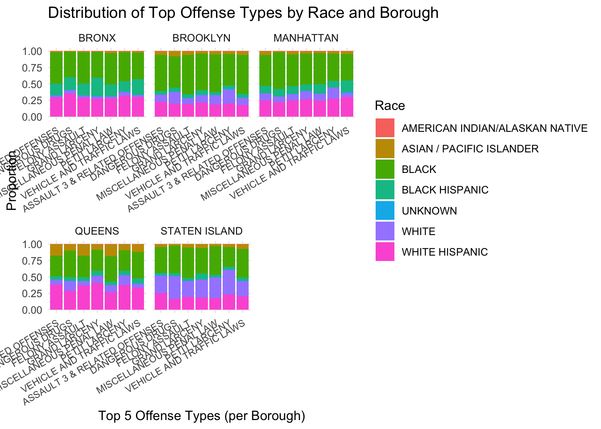
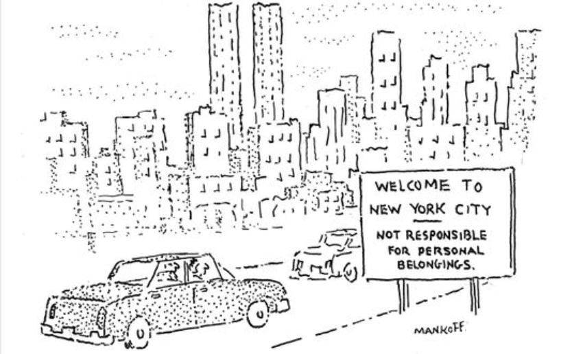
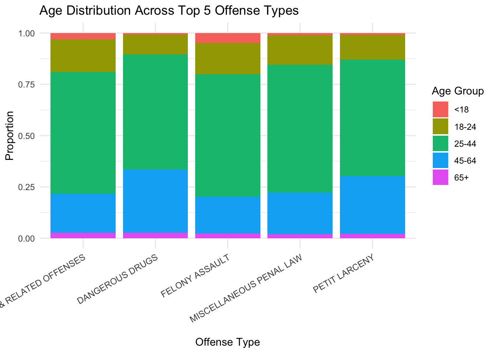
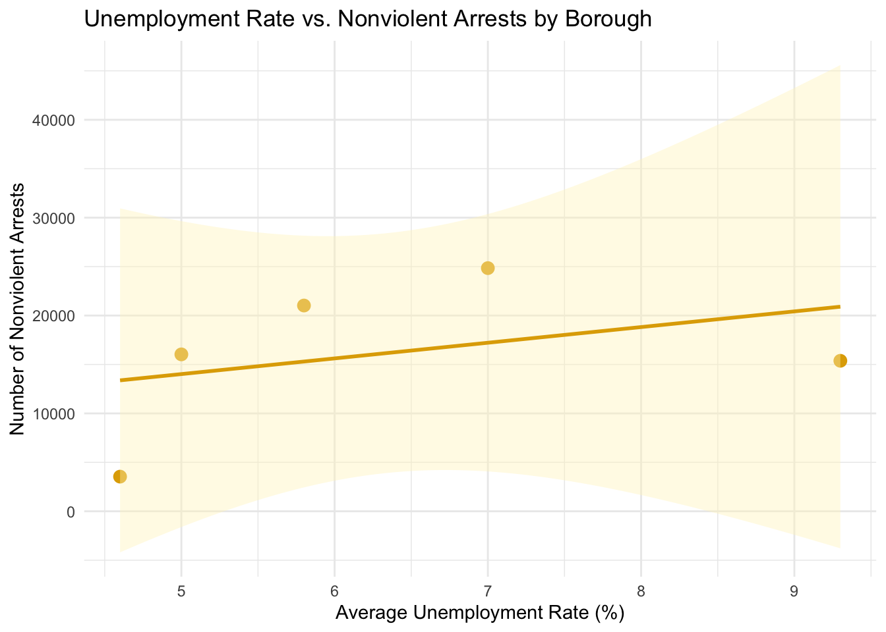

Big Picture
A 538-style deep dive into who gets arrested where — and why unemployment might explain part of the story.

Unequal Enforcement: The Geography of Non-Violent Arrests in NYC
The New York Police Department (NYPD) arrests thousands of individuals each year. But who gets arrested — and for what — tells a deeper story than crime statistics alone. Our investigation into arrest data and unemployment rates across New York City reveals a troubling relationship: Black and Hispanic residents in economically disadvantaged boroughs face a disproportionate number of non-violent arrests.
🎥 Project Demo Video
You can watch a short 4-minute video demonstration of our interactive dashboard and key findings here:
This video walks through our Shiny dashboard and highlights racial, age-based, and economic disparities in NYC non-violent arrest patterns.
Presented by: Alexis Park
Race and Arrests: A Disproportionate Burden
Black and Hispanic individuals make up a disproportionately high share of arrests for the most common non-violent offenses across all five boroughs of New York City. This is especially visible in the Bronx, Brooklyn, and Queens, where offenses like misdemeanor assault, vehicle violations, and miscellaneous offenses show clear racial disparities.
These patterns are not reflective of crime severity, but rather of enforcement practices. The fact that the same types of offenses are consistently associated with higher arrest proportions for Black and Hispanic populations suggests a systemic pattern of targeted policing. This reinforces the broader concern that communities of color are more heavily surveilled — and more harshly penalized — for low-level offenses.
Age Patterns in Arrests

Arrests for the most common offenses — including petit larceny, felony assault, and drug-related charges — are heavily concentrated among individuals aged 25–44. This age group consistently dominates the arrest proportions across all five offense types. The 18–24 and 45–64 brackets also show notable presence, while individuals under 18 and over 65 make up only a small share.
This pattern may reflect broader socioeconomic dynamics: younger adults are often more exposed to environments where petty crimes or drug-related activities are policed more aggressively. The data suggest that policing practices disproportionately affect people in early adulthood, raising concerns about the long-term impacts of criminal records on employment, housing, and community integration.
These findings underscore the importance of age-sensitive approaches to justice. Rather than relying on punitive systems, community-driven and rehabilitative responses may offer more effective and equitable outcomes — especially for non-violent offenses committed by younger individuals.
Does Economics Play a Role?

Economic conditions appear to correlate with patterns in nonviolent arrests across New York City’s boroughs. In the chart above, we observe a positive relationship between the average unemployment rate and the number of nonviolent arrests in each borough. Boroughs like the Bronx and Brooklyn, which face higher unemployment rates, also report a disproportionately large number of arrests for nonviolent offenses—such as drug possession, petty theft, and trespassing.
This trend suggests that economic hardship may contribute to increased vulnerability to low-level policing. While unemployment does not directly cause crime, it can reflect broader systemic issues—such as underinvestment in certain communities, limited access to education, and fewer economic opportunities—that may lead to a heavier police presence and enforcement in economically disadvantaged areas.
Interactive Dashboard
You can explore the interactive arrest dashboard here:
👉 Launch Interactive Dashboard
Or view it embedded below:
This interactive dashboard allows users to explore arrest patterns across New York City’s boroughs, filtered by offense type and demographic characteristics. By selecting filters for race, sex, or age group, users can examine how specific populations are represented in arrest data — and how those patterns vary across geography.
For example, selecting “Race” as the demographic filter reveals disparities in arrest volumes for offenses like petit larceny or drug possession, particularly in boroughs like the Bronx and Brooklyn. Users can further investigate whether certain offenses are more concentrated in specific neighborhoods, or how demographic groups experience differential exposure to law enforcement.
This tool complements the broader analysis by giving the public direct access to the data — empowering them to identify patterns of potential over-policing or demographic bias in arrests. Interactive exploration also reinforces the importance of transparency and public accountability in understanding how justice is distributed in our cities.
Conclusion: Systemic Inequality in Plain Sight
Our project reveals how arrests in NYC disproportionately impact Black, Hispanic, and younger individuals — especially for non-violent offenses. These patterns highlight concerns about over-policing and demographic bias in certain neighborhoods. By exploring this data interactively, we hope to promote transparency and spark informed public conversation.